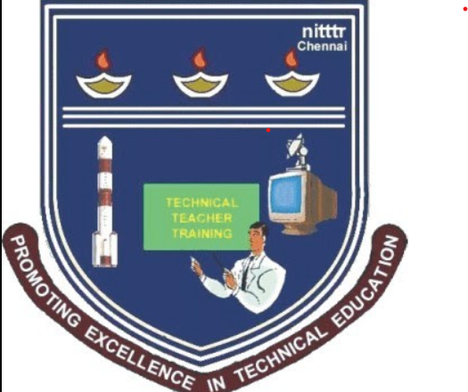

Harissh A S

ML Researcher|Data Driven Computational Analyst
__
I am currently pursuing my Master’s in Electrical Engineering at Columbia University, specializing in Data-Driven Computational Analyst,Interested in machine learning and generative AI for real-world systems, focusing on scalable AI solutions that transform complex data into intelligent automation and performance optimization across devices, networks, and infrastructure.

Research Experience
NITTTR
- • Conducted research on brain tumor detection using medical imaging, applying deep learning models YOLOv8, UNet, and ResNet-50 for tumor classification and segmentation.
- • Led supervised image processing for over 900 MRI scans, utilizing contrast enhancement, histogram equalization, and data augmentation to optimize input quality for machine learning.
- • Produced analytical reports and obtained clinical validation from radiologists to initiate development of a deep learning model for early-stage diagnosis by 30%.
- • Trained and evaluated multiple architectures on public datasets (e.g., BraTS, Figshare), achieving a peak accuracy of 92.4%, Dice coefficient of 0.87, and IoU score of 0.81.
- • Benchmarked performance across traditional ML classifiers (SVM, Random Forest) using SIFT + BoVW features vs. deep CNNs, demonstrating a 15% improvement in F1-score with deep learning.
Work Experience
TNeGA
- • Promoted to Senior Intern for exceptional performance in ML research & deployment.
- • Led and mentored junior interns from Anna University across projects including pneumonia detection, retinal disease detection, myocardial scar identification, and satellite image crop classification.
- • Designed and deployed a Cattle Identification System using a lightweight YOLO-NAS model for muzzle detection, storing embeddings in FAISS/Quadrant DBs, and achieving 83–90% accuracy in under 3 weeks.
- • Automated processes with FastAPI services, improving scalability and real-world usability.
- • Enhanced the Facial Recognition Attendance System (FRAS) by building preprocessing pipelines and improving model robustness.
- • Developed and optimized Crop & Pest Detection models, localizing pests (Stemborer, Fall Armyworm, Leaffolder) and applying Segment Anything Model (SAM) for auto-annotations across 80 lakh images spanning 23 crops, achieving ~70% accuracy on real-time farmer-collected images.
- • Represented TNeGA in NVIDIA & AWS AI conferences, engaged with government departments (WRD, GIS), and interacted with AI/ML startups, delivering detailed reports to senior officials.
- • Volunteered at the TNeGA GIS Conference (attended by IAS, IPS, and Govt. officers), gaining exposure to high-level AI/ML applications in governance.
Projects 💻
Smart Irrigation System
- • Objective of this project was to predict water intake on daily basis and monitoring its health condition.
- • Created a smart agricultural system using a Raspberry Pi, MATLAB GUI, and various sensors. The system monitored weather patterns, soil moisture levels, and nutrient levels (NPK) to predict the water requirements of crops. Machine learning algorithms were employed to analyze the sensor data and provide accurate predictions for optimal irrigation.
- • Used IoT concepts and communication protocols to send data from microcontroller to a database in cloud and used this data to model machine learning applications and gave recommendation for the amount of fertilizer to be added for efficient growth of plants.
Internet of Things (IoT)
Time Series Analysis
Wireless Technologies
ZigBee
XBee
Formula 1 Race Prediction
- • Aim was to perform regression using machine learning techniques using the historical dataset.
- • Utilized machine learning algorithms to predict Formula 1 race outcomes based on data from the official Formula 1 website. Employed Principal Component Analysis (PCA) for dimensionality reduction and Decision Trees, LSTMs, GRUs for supervised learning to train the model according to specific requirements and constraints.
- • Performed dimensionality reduction on the data and modeled machine learning models like logistic regression, random forest and deep learning models for better performance with 80 percent accuracy.
Logistic Regression
Deep Learning
Machine Learning
Data Visualization
Time Series Analysis
Long Short-term Memory (LSTM)
Deep Learning Model for Semantic Segmentation of Satellite Images
- • Aimed to provide insight on building height and area estimation using satellite and aerial imagery for detecting building setback.
- • Built a UNet-based semantic segmentation model for satellite images and deployed it on Hugging Face with a Gradio UI for user interaction. This enabled users to upload satellite images and view the generated segmented maps directly.
- • Performed segmentation using deep learning model and quantified the dimensions of the buildings.
Deep Learning
data preprocessing
Image Processing
Machine Learning
Python (Programming Language)
Flask